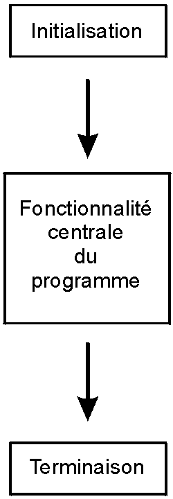
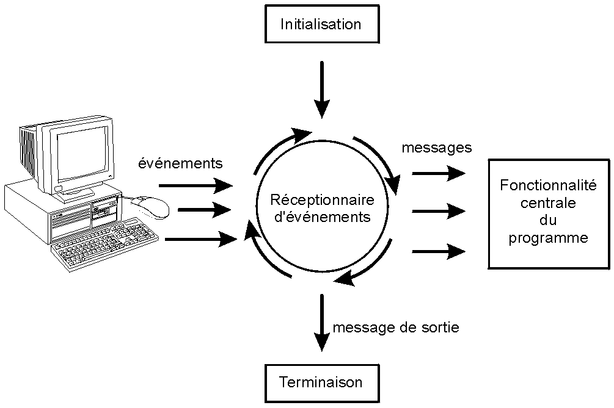
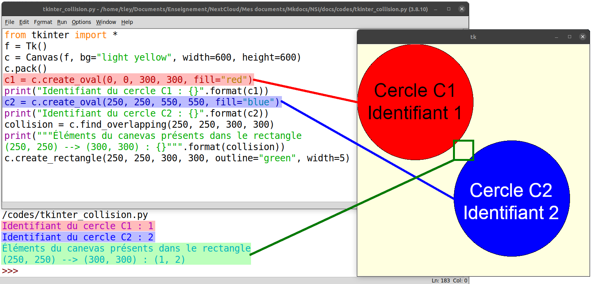
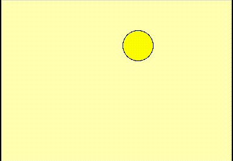
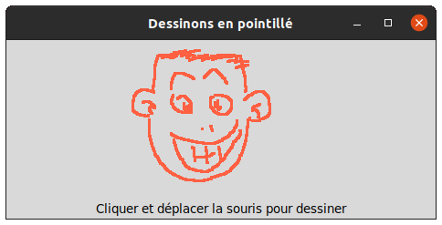
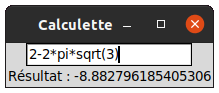
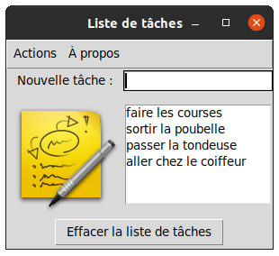

Tuto de Pascal Trieles "Interfaces graphiques en Python 3 avec Tkinter"
Introduction
Cette pages est une copie du site de Pascal Trieles
Tkinter est la blibliothèque de composants graphiques disponible par défaut avec Python 3. Vous pourrez trouver une traduction en français de sa documentation à l'adresse http://tkinter.fdex.eu/.
 Recommandations importantes
Recommandations importantes
-
Tout ce qui est décrit ici est hors-programme de NSI ! En poursuivant la lecture, vous comprenez que le temps que vous y consacrerez sera perdu, au sens où il ne vous aidera pas à avoir de meilleurs résultats en NSI. Par contre, cela pourra vous intéresser voire vous distraire : ainsi, il convient que vous preniez sur votre temps libre pour réaliser ces activités. En aucun cas vous ne devriez consommer du temps normalement consacré à vos études !
-
Au début de ce document, qui vise à vous faire découvrir les notions et composants de base de Tkinter, il vous sera demandé de travailler dans une console interactive (Idle ou iPython). Par la suite, vous créerez des scripts.
-
Je vous demande de faire en sorte que votre console interactive occupe une moitié de votre écran, et de veiller à ce que les « fenêtres Tkinter » que vous fabriquerez soient toujours visibles sur l'autre partie de l'écran (vous devrez probablement les déplacer, à chaque fois).
En mode interactif, la construction de l'interface graphique (souvent abrégée en GUI (pour Graphical User Interface en anglais) est dynamique et progressive, l'observer étape après étape est instructif.
Premiers pas
Chaque fois que l'on voudra exploiter la bibliothèque Tkinter, il faudra commencer par l'importer (on va faire ici un import global, bien que cela ne soit pas optimal).
>>> from tkinter import * # Import indispensable (mais excessif).
>>> f=Tk() # Création de la fenêtre de base de l'application.
>>> f.title("Découverte de Tkinter") # On lui donne un nom...
Normalement, une fenêtre (très très vide) a dû apparaître (si vous ne la repérez pas au premier coup d'œil, cherchez-là dans la « barre des tâches » ou le dock).
NE LA FERMEZ SURTOUT PAS !
Si par malheur vous avez déjà cliqué sur la croix qui, traditionnellement, ferme les fenêtres, vous n'avez plus qu'à saisir à nouveau les lignes 1 et 2 précédentes...
Remarques
-
Les commentaires dans le code sont à lire avec attention ! Il est en revanche inutile de les taper
 ...
... -
La Programmation Orientée Objet (POO) est le style de programmation de prédilection pour les interfaces graphiques (au moins en Python). Cela permet notamment d'éviter de s'encombrer (voire s'égarer
 !) avec des variables
globales, même si Tkinter offre — dans les cas simples — des moyens de contourner
cette difficulté). Vous aurez donc très souvent à faire appel aux notations usuelles
en POO :
!) avec des variables
globales, même si Tkinter offre — dans les cas simples — des moyens de contourner
cette difficulté). Vous aurez donc très souvent à faire appel aux notations usuelles
en POO : objet.methode(...).
Pour parler (un rien) de Programmation Orientée Objet
Pour faire simple, un objet est une portion de code autonome. Il est défini à partir d'une classe, qui, chaque fois qu'elle est instanciée (exécutée), crée un nouvel objet.
Pour tenter une analogie : une classe est un moule à gâteau, un objet est un gâteau, et on peut créer plusieurs gâteaux (qui peuvent être un peu différents) à partir du même moule.
Un attribut est une caractéristique de l'objet. C'est une variable qui n'existe que lorsque un objet est instancié, à laquelle on ne peut accéder qu'à travers l'objet, et qui est liée à cet objet en particulier (deux objets instanciés à partir de la même classe auront chacun un même attribut, qui portera le même nom, mais désignera des valeurs différentes.
Une méthode est une fonction « embarquée » dans l'objet, qui peut agir
sur lui « de l'intérieur ». Elle peut par exemple modifier les valeurs des
attributs. On peut appeler une méthode à partir d'un objet avec la syntaxe
objet.methode()
Spécificité d'un programme « graphique »
Dans un script, il faudra systématiquement démarrer la « boucle principale » à
l'aide d'une instruction du type f.mainloop() (où f désigne la fenêtre
principale du programme).
La méthode mainloop provoque le démarrage du gestionnaire d'événements
associé à la fenêtre : il est indispensable au bon fonctionnement de votre
application graphique. Concrètement, une boucle infinie est démarrée, elle
ne sert qu'à « consommer » une quantié minimale des ressources de la machine,
juste ce qu'il faut pour surveiller très régulièrement (et très très très
souvent :wink! !) les clics de souris, les pressions sur les touches du
clavier, etc.
C'est un peu cette instruction qui « met en marche » votre application graphique, en lui permettant d'interagir avec l'utilisateur.
On parle dans cette situation de « programmation événementielle », dans laquelle une boucle infinie attend sans arrêt qu'on la sollicite pour réagir, par opposition à la « programmation séquentielle » dans laquelle un programme a vocation à se terminer à un moment (qui, si l'on s'en donnait la peine, pourrait être) connu d'avance.
| Programme séquentiel | Programme événementiel |
|---|---|
|  |  |
Les images proviennent de l'excellent livre libre « Apprendre à programmer avec Python 3 ». Bien qu'un peu ancien, désormais, il constitue néanmoins une ressource de première importance !
Un premier widget
Un widget est un WIndow gaDGET. Une interface graphique est composée de divers widgets. Nous en verrons quelques uns (et vous en découvrirez d'autres par vous-mêmes, notamment en explorant la documentation de Tkinter).
En supposant que vous avez saisi, dans votre console Python, les instructions précédentes et que vous n'avez pas fermé la fenêtre qui a dû apparaître, saisissez maintenant le code suivant :
# Création d'un label (une zone d'affichage), dépendant de la fenêtre f
>>> l=Label(f, text="Mon premier widget")
# Mais pourquoi donc rien ne s'affiche ?
Rien ne s'affiche parce que le widget n'est pas encore positionné dans
la fenêtre. Il y a en effet plusieurs façons de placer les éléments constitutifs
de l'interface graphique au sein de la fenêtre principale (qui ici est désignée
par la variable f).
Tkinter dispose de 3 gestionnaires de positionnement : pack, grid
et place. On utilisera surtout pack dans les cas simples : c'est le
plus basique et le plus facile à utiliser (il « empile » les widgets
l'un sous l'autre en colonne, ou l'un à côté de l'autre en ligne). Pour
des interfaces graphiques plus complexes, on utilisera surtout grid.
# Insertion pour affichage du label dans la fenêtre f
>>> l.pack()
# Note : la géométrie de la fenêtre s'en trouve affectée !
On peut évidemment contrôler le « format » de la fenêtre : définir sa taille, décider si l'utilisateur est autorisé à la redimensionner (et si oui, dans quelle direction).
# Altérer la géométrie d'une fenêtre
>>> f.geometry('200x30')
# L'approche suivante est meilleure
>>> f.geometry('{}x{}'.format(300, 50))
# Interdire le redimensionnement d'une fenêtre
>>> f.resizable(0,0)
# Autoriser le redimensionnement d'une fenêtre en largeur
>>> f.resizable(1,0)
# Autoriser le redimensionnement d'une fenêtre en hauteur
>>> f.resizable(0,1)
# Autoriser le redimensionnement d'une fenêtre dans les 2 directions
>>> f.resizable(1,1)
Vous remarquerez que le label reste « statique » : il ne change pas de taille lorsque la fenêtre est redimensionnée. On peut là encore contrôler comment le widget se comporte en fonction des modifications subies par la fenêtre. Mais on va d'abord modifier sa couleur de fond afin de rendre ces changements plus visibles.
# Configuration a posteriori du label : définition d'un couleur de fond
>>> l.configure(background="light blue")
# On veut que l'espace vide autour du widget soit équitablement réparti
>>> l.pack(expand=1)
# On veut que notre label occupe l'espace jusqu'aux bords de la fenêtre
>>> l.pack(fill="x")
# Essayer de redimensionner la fenêtre horizontalement, puis verticalement
>>> l.pack(fill="y")
# Réessayer de redimensionner la fenêtre
>>> l.pack(fill="both")
# Et maintenant ?
Détruire ou « oublier » un widget
Oublier un widget est différent de le détruire
Lorsqu'on demande à Tkinter d'oublier un widget, il cesse d'être affiché,
mais on peut le ré-afficher lorsqu'on le souhaite. On pourrait par exemple
oublier le label l avec l'instruction l.forget().
Remarque
Attention : ici, la méthode forget() est un raccourci pour .pack_forget().
Il faut utiliser la méthode grid_forget() lorsqu'on a recours au
gestionnaire de placement grid. Une possibilité intéressante de ce
dernier gestionnaire est l'oubli temporaire : avec la méthode grid_remove(),
le widget est retiré de l'affichage mais toutes ses options sont mémorisées
(y compris sa position dans la grille). Il suffit d'un nouvel appel
à sa méthode grid() et il sera réaffiché exactement de la même manière
qu'avant son oubli (pack ne possède pas d'équivalent).
Au contraire, détruire un widget est définitif (il faut le recréer
*intégralement si l'on veut le « ressusciter »). On utilise pour cela la
méthode destroy(), par exemple l.destroy().
Remarque
Les méthodes pack_slaves() et grid_slaves() renvoient la liste des
widget « enfants » d'un widget donné. C'est utile pour les supprimer
ou les oublier...
Ressources complémentaires
- Concernant
grid_forget(). - Concernant
pack_forget(). - Discussion sur stackoverflow : «
 In Tkinter is there any way to make a widget not visible ».
In Tkinter is there any way to make a widget not visible ».
Dessiner !
Le widget canevas
Le widget Canvas permet de dessiner : on peut notamment y placer des
lignes, des polygones, des images, etc. Pour créer et afficher un canevas,
dont le contenu par défaut est évidemment vide, saisir :
ATTENTION : dans un canevas, l'axe des ordonnées est dirigé VERS LE BAS ! Note historique
Cette situation n'est pas propre à Python / Tkinter. En fait, dans la plupart des langages de programmation :
-
l'origine \(O(0\,;0)\) du repère est le coin supérieur gauche de l'écran (plus exactement : de la fenêtre ou du canevas) ;
-
l'axe des abscisses \((Ox)\) est dirigé comme on en a l'habitude (de la gauche vers la droite, en suivant le bord supérieur de la fenêtre ou du canevas, comme en mathématiques) ;
-
mais l'axe des ordonnées \((Oy)\) est dirigé vers le bas, en sens contraire du sens habituel (en suivant le bord gauche de la fenêtre ou du canevas).
Les raisons à cette situation qui pourrait vous surprendre sont purement historiques : sur les premiers afficheurs (des moniteurs analogiques, ressemblant aux anciennes télévisions à tube cathodique), le faisceau d'électrons partait du coin supérieur gauche, se déplaçait vers la droite, puis descendait légèrement en revenant à gauche. La vitesse à laquelle les premiers écrans pouvaient dessiner les caractères était assez lente, il était donc préférable de suivre le sens de lecture... occidental (n'oublions pas que l'ordinateur est, pour l'essentiel, une invention anglo-saxonne, même si l'histoire de Konrad ZUSE mérite d'être connue).
Cf. cette question sur StackOverflow
ainsi que cet article de Wikipedia qui traite de l'histoire de la télévision
analogique.
Voici une animation (issue de Wikipedia) montrant comment une image entrelacée était affichée sur un moniteur analogique.

>>> c = Canvas(f, background="yellow")
>>> c.pack()
# Réglages a posteriori (on peut aussi décider de faire ces réglages lors de
# la création du Canvas, c'est une question de point de vue et de lisibilité).
>>> c.configure(background="light green")
# Il y a une autre façon de faire (à vous de choisir) :
>>> c['background'] = "light yellow"
>>> c.configure(height="800")
>>> c.["width"] = 800
# On peut aussi régler plusieurs paramètres en une seule instruction :
>>> c.configure(width=600, height=400)
Les formes de base
Le Canvas de Tkinter connaît les « objets graphiques »
suivants : lignes, rectangles, polygones, ovales, arcs (de cercles), images,
textes et sous-fenêtres. Nous allons en expérimenter quelques uns.
# Création d'un rectangle rempli avec la couleur "light blue" (bleu léger) :
>>> rr = c.create_rectangle(10, 50, 100, 200, fill="light blue")
# L'affichage du rectangle est immédiat (l'objet « canevas » est directement
# modifié « en place ») !
# Noter que rr est un simple entier, qui repère l'objet du canevas.
# Grâce à ce numéro, on peut retrouver l'objet graphique et le modifier :
>>> c.itemconfigure(rr, fill="red")
# (Re)Trouver le type d'un objet et la valeur d'un de ses paramètres :
>>> c.type(rr)
'rectangle'
# L'objet graphique rr est désormais rempli en rouge (rr pour rectangle rouge !).
>>> c.itemcget(rr, "fill")
# Création d'autres figures, par exemple un ovale (sert aussi pour les cercles) :
>>> o = c.create_oval(50, 100, 250, 150, fill="yellow")
>>> rb = c.create_rectangle(20, 60, 150, 210, fill="blue")
>>> rv = c.create_rectangle(250, 250, 100, 100, fill="green")
>>> rn = c.create_rectangle(0, 500, 100, 100, fill="black")
 Attention
Attention
Il est vraiment important de comprendre la nécessité de mémoriser la
valeur retournée
par la méthode construisant chaque élément graphique d'un Canvas.
En effet, si on ne le fait pas, il sera impossible de modifier ultérieurement
cet élément graphique (par exemple pour le déplacer) !
Gérer la superposition d'éléments graphiques
Mais pourquoi l'ovale n'apparaît-il pas ? Parce que les formes se recouvrent. On peut donc gérer la « profondeur d'affichage », afin de provoquer ou d'éviter un chevauchement, et permettre ainsi le passage au « plan supérieur » ou au « plan inférieur » d'un élément graphique.
Cela se fait à l'aide des méthodes tag_lower et tag_raise. Par exemple :
>>> c.tag_raise(o)
>>> c.tag_lower(rn)
Remarque
Ces méthodes peuvent également prendre en argument un tag (une chaîne de caractères identifiant un ou plusieurs éléments graphiques). Vous aurez un peu plus de de détails sur ce sujet dans la section « Pour aller plus loin : les tags ». Quant à ces méthodes en particulier, suivez ce lien pour en apprendre davantage. Sachez qu'on peut, entre autres choses, positionner un élément graphique relativement à un autre...
Déplacements : trouver et altérer les coordonnées d'un objet du canevas
Une fois un élément graphique créé dans le Canvas de Tkinter et son identifiant
obligatoirement mémorisé (d'une façon ou d'une autre), on peut y réaccéder
afin de le faire évoluer. On peut ainsi modifier n'importe laquelle de ses
caractéristiques : couleur, poisition, forme, etc.
Obtenir les coordonnées d'un élément graphique du Canvas
On utilise pour cela la méthode coords() du Canvas :
# Trouver les coordonnées d'un objet d'un canevas :
>>> c.coords(rr)
[10.0, 50.0, 100.0, 200.0] # Une LISTE est renvoyée.
Déplacer un élément graphique sur un Canvas
Il y a deux façons d'y parvenir.
-
La première, recommandée, est relative à la position actuelle de l'objet graphique. Cela signifie que l'on précise le déplacement à partir de la position actuelle de cet objet. D'un point de vue mathématique, le déplacement est alors une translation, définie par les coordonnées (abscisses et ordonnées) du vecteur associé .
# Déplacement d'un objet par décalage à partie de sa position actuelle : >>> c.move(rr, 200, 0) # Décalage en abscisse en premier, ici 200... >>> c.move(rr, 0, 100) # ...décalage en ordonnée ensuite, ici 100. >>> c.move(rr, -10, -10) # On peut bien sûr translater en oblique !Remarque
Cette approche a l'avantage d'éviter tout risque de modifier par inadvertance les proportions de l'objet. L'alternative, présentée juste après, est de changer les spécifications de l'objet, ce qui peut impliquer, par exemple, de modifier l'ensemble de ses coorodonnées. Si cela est fait sur la base d'un calcul, et que ce calcul est faux, alors les proportions de l'objet seront modifiées, ce qui n'est pas nécessairement souhaité
! -
L'autre approche consiste à modifier l'ensemble des coordonnées définissant l'élément graphique. On emploie pour cela la méthode
coords():# Modifier les coordonnées d'un objet d'un canevas (2 approches possibles). # Notez que la géométrie de l'objet peut changer si l'on n'y prend pas garde ! >>> c.coords(o, 200, 300, 250, 350) >>>[] # La valeur de retour est une liste vide. >>> c.coords(o, (200, 50, 250, 100)) # Ici on passe un TUPLE de coordonnées. >>>[] # Idem pour la valeur de retour... # Modification explicite du paramétrage de l'élément graphique rr : >>> c.coords(rr, 20, 50, 100, 150)Remarques
-
Vous aurez noté que la deuxième modification (avec le tuple) a changé l'aspect de l'objet désigné par
o(d'ovale, initialement, il est devenu circulaire). C'est l'illustration de ce qui était indiqué juste avant cette section... -
La méthode
coords()duCanvas, qui peut prendre en paramètres soit une succession de coordonnées soit des coordonnées explicitement groupées dans untuplerenvoie, lorsqu'elle n'est appelée qu'avec le numéro identifiant un élément graphique, une liste des coordonnées de cet élément :>>> c.coords(rr) [20.0, 50.0, 100.0, 150.0]Notez également que les coordonnées ont beau être données entières, Tkinter les transtype en
<float>.Il y a donc certaines incohérences ici, dans la logique de Tkinter...
-
Détecter des chevauchements
Cette fonction est très utile, par exemple pour détecter les collisions
dans un jeu. Elle est liée à la notion de « bounding box ».
find_overlapping signifie littéralement « trouve ce qui recouvre ». On
donne en argument à cette méthode les coordonnées d'un rectangle qui correspond
à la région étudiée. Elle renvoie un tuple.
-
Si le tuple est vide, alors la zone observée est vide : aucun élément graphique n'y est présent.
-
Si un seul élément est retourné dans le tuple, c'est qu'il n'y a pas de chevauchement (un seul élément graphique figure dans la zone).
-
Si le tuple compte 2 éléments ou plus, il y a bel et bien un chevauchement (mais uniquement pour ce qui concerne les bounding boxes, cf. remarque plus bas) : deux éléments graphiques (ou plus) sont situés dans la même zone rectangulaire.
Voyez ce que donnent les instructions suivantes !
>>> c.find_overlapping(0,0,100,100)
>>> c.find_overlapping(0,0,200,100)
>>> c.find_overlapping(200,200,250,250)
>>> c.find_overlapping(300,300,350,350)
Remarque
Attention : la zone concernée est rectangulaire, ainsi deux cercles pourront être considérés comme se chevauchant car le carré dans lequel ils sont inscrit se recouvrent. Pourtant, à l'écran, les cercles ne se toucheront en aucun cas !

Bienvenue dans le monde merveilleux de la détection des collisions...
Pour aller plus loin : les tags
Un tag est une étiquette. Étiqueter les éléments graphiques d'un Canvas
sert à les regrouper sous une même étiquette. Par exemple, dans le contexte
d'un jeu, on pourra utiliser plusieurs éléments graphiques pour définir un
objet du décor. Si, durant le déroulement du jeu, il est nécessaire de
modifier cet objet, utiliser le tag correspondant simplifiera grandement
les choses : il sera alors facile de modifier l'ensemble des éléments associés
(exemple : modifier la couleur d'un objet du décor, car on a changé d'univers
et, même si les éléments du décor sont identiques, l'ambiance graphique
est différente).
Un tag est une simple chaîne de caractères) : un élément graphique du Canvas
peut avoir plusieurs tags différents, et un même tag peut être associé
à plusieurs éléments graphiques différents.
Pour en savoir plus sur ce sujet, vous pourrez étudier la méthode
tag_bind().
Notez que trouver un élément graphique à partir d'un tag est très simple : partout où un identifiant d'élément est admis comme paramètre d'une méthode, vous pouvez le remplacer par un tag !
Divers
Voici quelques méthodes du Canvas qu'il peut être utile de connaître :
# Liste de tous les objets graphiques du canevas :
>>> c.find_all()
# Détruire un objet graphique :
>>> c.delete(3)
# Forcer la réactualisation du canevas. Peut être utile pour des questions de
# performances, et donc de fluidité d'affichage (vous pourrez lire à ce sujet
# http://effbot.org/tkinterbook/canvas.htm#performance-issues)
>>> c.update()
Des exemples concrets
Réaliser une animation avec la méthode after
On va ici réaliser une animation, dans laquelle un élément graphique rebondira
indéfiniment sur les bords du canevas. Ça n'est pas très utile, mais c'est
rigolo  ! Et puis cela va nous amener à rencontrer
la méthode
! Et puis cela va nous amener à rencontrer
la méthode after des fenêtres Tkinter, qui pourra ensuite permettre
de créer des petits jeux !
Première approche non-optimale
Toujours dans la console Python interactive que vous utilisez depuis le début de ce document, saisissez le code ci-dessous.
>>> from random import randrange as rnd # Préférer randrange à randint !
>>> from time import sleep # Voir plus loin l'utilité !
>>> Dx, Dy = rnd(1, 21), rnd(1, 21) # Vecteur déplacement aléatoire.
>>> while True: # On démarre une boucle infinie...
c.move(o, Dx, Dy)
if c.coords(o)[0] <= 0 or c.coords(o)[2] >= c.winfo_width():
Dx *= -1
if c.coords(o)[1] <= 0 or c.coords(o)[3] >= c.winfo_height():
Dy *= -1
c.update() # Nécessaire (la boucle principale de la GUI n'est pas lancée)
sleep(0.05) # Utile si votre ordinateur est très performant !
Voici ce que vous devriez observer :

Vous devriez pouvoir interrompre la boucle infinie en pressant simultanément les touches Ctrl+C.
Explications détaillées du code précédent
-
On commence par générer au hasard les coordonnées du vecteur selon lequel l'élément graphique
oduCanvasse déplacera. -
On lance une boucle infinie.
-
Dans cette boucle, l'élément graphique
oest déplacé (de façon relative). Puis ses (nouvelles) coordonnées sont étudiées, afin de faire en sorte que le rebond advienne lorsqu'il vient à toucher les bords du canevas. -
Si l'abscisse de la « limite gauche » de
odevient négative, ou que l'abscisse de la « limite droite » deodevient supérieure à la largeur du canevas, le déplacement selon l'axe des abscisses change de signe (cela revient à changer l'abscisse du vecteur déplacement en son opposé). -
De même, si l'ordonnée de la « limite supérieure visuelle » de
odevient négative, ou que l'ordonnée de la « limite inférieure visuelle » deodevient supérieure à la hauteur du canevas, le déplacement selon l'axe des ordonnées change de signe (cela revient à changer l'ordonnée du vecteur déplacement en son opposé).
Remarque : la phrase précédente peut paraître surprenante si l'on a déjà oublié que l'axe des ordonnées, en programmation, est souvent dirigé vers le bas !
-
Remarques
-
Sans l'instruction
sleep(), le résultat serait exécrable ! Le déplacement s'effectuerait aussi vite que possible, et l'affichage serait alors cahotique et saccadé... -
Lire
cette question sur stackoverflow
pour une discussion concernant c.winfo_width()versusc['width'], dans l'objectif d'obtenir la taille d'un widget. -
Lire
cette autre question sur stackoverflow
pour en apprendre plus sur les questions liées au redimensionnement du
canevas, pour s'adapter au redimensionnement de la fenêtre parente.
Animer mieux avec la méthode after()
Une façon bien plus adaptée de répéter le déplacement de façon régulière
et pas trop fréquente est d'utiliser une fonctionnalité native de Tkinter :
la méthode after() de la fenêtre principale.
On lui passe en paramètre un délai, exprimé en millisecondes, ainsi qu'une
fonction, qui sera automatiquement exécutée passé ce délai. Pour que
l'opération se répète, la fonction concernée doit absolument déclencher
à nouveau un appel à la méthode after().
Voici un exemple concret (l'animation durera quelques secondes). Notez également
la méthode after_cancel() qui permet d'interrompre le flux des appels à
la fonction bouge, entretenus par la méthode after().
>>> mvt = 0
>>> i = 0
>>> def bouge():
global i, mvt, Dx, Dy # Essayez sans cette ligne, pour voir...
c.move(o, Dx, Dy)
if c.coords(o)[0] <= 0 or c.coords(o)[2] >= c.winfo_width():
Dx *= -1
if c.coords(o)[1] <= 0 or c.coords(o)[3] >= c.winfo_height():
Dy *= -1
c.update() # Toujours nécessaire...
mvt = f.after(20, bouge) # Un délai de 20 ms implique 50 animations / s
i += 1
if i >= 200:
f.after_cancel(mvt)
>>> bouge()
>>> print(mvt, i)
Détails sur la méthode after_cancel()
L'arrêt de l'animation est provoqué par l'appel de la méthode
after_cancel(), à laquelle on passe en paramètre le numéro du dernier
« job » d'animation (ici via la variable mvt). Il est donc essentiel
de conserver cette information, constituée d'une chaîne de la forme
"after#1234". Elle est obtenue lors de l'appel de la méthode after().
Note importante : les variables globales, C'EST LE MAL !
Vous avez constaté la présence du mot-clef global, au tout début du
code de la fonction bouge(). Il est suivi du nom des variables i,
mvt, Dx et Dy. En effet, ces variables sont modifiées par la fonction.
Mais celle-ci étant automatiquement ré-exécutée par la fenêtre f après
20 millisecondes d'attente, il faut trouver un moyen de garder une trace
des modifications des valeurs de ces variables.
Sans indication spécifique, une variable créée ou modifiée au sein d'une
fonction est locale. Cela signifie qu'elle n'a d'existence que tant
que la fonction est en cours d'exécution. Sa valeurs sera perdue lorsque
l'exécution de la fonction prendra fin (à moins qu'elle ne soit renvoyée
par la fonction, par l'instruction return).
Le fait de déclarer les variables globales permet que les modifications
réalisées au sein de la fonction bouge soient répercutées à l'extérieur
de son espace de noms (la zone de mémoire réservée à la fonction, que
Python lui octroie au moment de son exécution).
Le recours aux variables globales est considérée comme peu optimal car source d'erreurs (difficile, parfois, de savoir quelle fonction modifie quelle variable). Il faut donc absolument éviter d'avoir recours aux variables globales ! Une bonne stratégie de contournement repose sur l'utilisation d'un dictionnaire Python, qui garde la trace des valeurs importantes. Cette structure sophistiquée peut, en tant qu'objet Python, être naturellement modifiée par une fonction.
Un exemple « dans les règles de l'art »
Il est temps de vous proposer un script complet, avec la bonne façon
de gérer les variables sans les déclarer global ! Enregistrez le code
ci-dessous dans un fichier nommé animation.py.
# coding: utf8
from tkinter import *
from random import randrange as rnd
# Dictionnaire rassemblant les paramètres essentiels du « jeu ». Il peut
# naturellement être modifié depuis l'intérieur de la fonction 'bouge'
# définie un peu plus bas...
config = {"Dx": rnd(1, 21), "Dy": rnd(1, 21), "animation": ""}
def bouge():
"""Fonction gérant les animations"""
Dx = config["Dx"]
Dy = config["Dy"]
c.move(o, Dx, Dy)
if c.coords(o)[0] <= 0 or c.coords(o)[2] >= c.winfo_width():
config["Dx"] = -Dx
if c.coords(o)[1] <= 0 or c.coords(o)[3] >= c.winfo_height():
config["Dy"] = -Dy
animation = f.after(20, bouge) # Délai de 20 ms, soit 50 FPS...
c.itemconfigure(t, text="Animation : {}".format(animation))
no_animation = int(animation.split("#")[1]) # Extrait l'entier de 'after#123'.
config["animation"] = animation
if no_animation >= 400:
f.after_cancel(animation) # Arrêt de l'animation
# Construction de l'interface graphique (minimaliste).
f = Tk()
f.title("Animations avec le canevas de Tkinter")
# Le canevas
c = Canvas(f, background="light yellow", width=800, height=600)
c.pack()
# Les éléments graphiques du canevas. Nouveauté : un texte !
o = c.create_oval(200, 50, 250, 100, fill="yellow")
t = c.create_text(10, 10, text="Animation : stoppée", anchor='nw')
bouge() # On doit appeler la fonction 'bouge()' pour initier l'animation !
f.mainloop() # Démarrage de la boucle principale de la fenêtre.
Remarques
-
Notez ligne 21 le découpage de la chaîne
after#xxx...sur le caractère#à l'aide de la méthodesplit()des chaînes de caractères, afin de récupérer la partiexxx...qui le suit, puis la conversion de la chaîne ainsi obtenue en entier avec l'instructin de transtypageint(). -
Notez, lignes 16, 18 et 22 la modification du dictionnaire
configdepuis le corps de la fonctionbouge(), car c'est un objet Python. La syntaxeconfig[clef] = valeurfait en réalité appel à une méthode de l'objetconfig, qui reçoitvaleuren argument, et qui modifie sans difficultéconfigcar c'est en quelque sorte l'objet lui-même qui se modifie. -
Notez l'inutilité de forcer systématiquement la mise à jour du canevas avec l'instruction
c.update(). Tkinter s'occupe du rafraîchissement de l'affichage au travers de la boucle principalef.mainloop().
Un point important à propos de after()
Il est fondamental de comprendre que la méthode after() permet à Tkinter
d'appeler automatiquement (ici toutes les 20 ms, soit 50 fois par seconde),
une fonction qu'on lui donne en argument.
Attention : on passe à la méthode after() le nom de la fonction !
Il faut bien distinguer fonction, qui est un objet Python de type
<function>, et fonction() (avec des parenthèses et éventuellement
des paramètres entre ces parenthèses), qui déclenche l'exécution de
ladite fonction, et qui désigne donc la valeur de retour ainsi produite.
Cette valeur de retour peut être n'importe quel objet Python, « rien » y
compris (c'est-à-dire None)...
Attacher un évènement à un widget pour lancer l'animation
On va maintenant voir comment créer un bouton qui, lorsqu'on cliquera dessus, déclenchera le mouvement de l'élément graphique. On dira qu'on attache une fonction à un évènement.
Vous allez devoir modifier le script animation.py de sorte à ce qu'il
corresponde au code ci-dessous.
# coding: utf8
from tkinter import *
from random import randrange as rnd
# Dictionnaire rassemblant les paramètres essentiels du « jeu ».
config = {"Dx": rnd(1, 21), "Dy": rnd(1, 21), "animation": ""}
def bouge(event=None):
"""Fonction gérant les animations"""
Dx = config["Dx"]
Dy = config["Dy"]
c.move(o, Dx, Dy)
if c.coords(o)[0] <= 0 or c.coords(o)[2] >= Xmax:
config["Dx"] = -Dx
if c.coords(o)[1] <= 0 or c.coords(o)[3] >= Ymax:
config["Dy"] = -Dy
animation = f.after(20, bouge) # Délai de 20 ms, soit 50 FPS...
c.itemconfigure(t, text="Animation : {}".format(animation))
no_animation = int(animation.split("#")[1]) # Extrait l'entier de 'after#123'.
config["animation"] = animation
# Construction de l'interface graphique (minimaliste).
f = Tk()
f.title("Animations avec le canevas de Tkinter")
# Le canevas
c = Canvas(f, background="light yellow", width=800, height=600)
c.configure(borderwidth=5, relief=RIDGE, highlightthickness=2)
c.pack(padx=10, pady=10)
# Les éléments graphiques du canevas. Nouveauté : un texte !
o = c.create_oval(200, 50, 250, 100, fill="yellow")
t = c.create_text(10, 10, text="Animation : stoppée", anchor='nw')
# Un bouton
b = Button(f, text='Bouge de là !')
b.pack()
b.bind('<Button-1>', bouge) # '<Button-1>' est le bouton gauche de la souris
c.update() # Indispensable, sinon Xmax et Ymax (ci-dessous) vaudront 1 chacun !
Xmax, Ymax = c.winfo_width(), c.winfo_height()
f.mainloop() # Démarrage de la boucle principale de la fenêtre.
Remarques
Notez le paramètre event qu'attend la fonction bouge, et qui reçoit
la valeur None si aucun évènement n'est passé à la fonction par l'objet
graphique auquel elle est attachée. Ici, un tel évènement n'est pas généré
par l'objet Button, on pourrait donc simplifer la définition de la fonction
en éliminant le paramètre. Mais certains objets Tkinter, auxquels on a attaché
une fonction, génèrent et passent des objets évènements à leur fonction
associée (voir le paragraphe suivant). Et il peut aussi arriver qu'on souhaite
associer la même fonction à deux objets Tkinter, l'un générant un évènement
et l'autre non. Prendre l'habitude de définir une fonction qui doit être
associée à un objet Tkinter en lui donnant systématiquement comme paramètre
event=None est donc une bonne habitude (il faut ensuite tester dans le
code de la fonction la valeur de event, pour savoir si elle vaut None ou pas).
Problème !
Cliquez à nouveau sur le bouton « Bouge de là ! » : vous observerez que le mouvement s'accélère. Cliquez encore : il accélère davantage. Et ainsi de suite.
Pourquoi ?
Parce que vous déclenchez un nouvel appel à la fonction bouge : au
lieu d'être appelée une fois toutes les 20 ms, elle sera alors appelée
deux fois, et ces appels seront également répétés toutes les 20 ms.
Et ainsi de suite : plus vous cliquez, plus vous lancez de « cycles »
d'appels à la fonction bouge, d'où l'accélération observée, puisque
la balle bouge, non pas plus vite, mais plus souvent... ce qui au
final revient au même !
Exercices
-
Modifier le code précédent pour ajouter à l'interface un second bouton permettant de stopper le mouvement. Rappel : il faut recourir à la méthode
after_cancel(). -
Modifier le code d'origine (pas celui créé à l'exercice précédent) de sorte à ce qu'une touche, par exemple la touche Enter ou la barre d'espace, déclenche ou stoppe le mouvement (selon la situation avant l'appui).
Vous consulterez avec profit la documentation de Tkinter consacrée aux évènements. -
Comment déclencher ou arrêter le mouvement aussi bien à la souris qu'au clavier ?
-
Comment affecter une action aux autres bouton de la souris ?
Dessiner à la souris
Maintenez enfoncé le bouton gauche de la souris, et déplacez-là pour dessiner !

# coding: utf8
from tkinter import *
largeur_canevas = 500
hauteur_canevas = 150
def dessine(event):
rouge_orange = "#ff6042"
x1, y1 = event.x - 1, event.y - 1
x2, y2 = event.x + 1, event.y + 1
c.create_oval(x1, y1, x2, y2, fill=rouge_orange, outline=rouge_orange)
f = Tk()
f.title("Dessinons en pointillé")
c = Canvas(f, width=largeur_canevas, height=hauteur_canevas)
c.pack(expand=YES, fill=BOTH)
c.bind('<B1-Motion>', dessine) # Autre possibilité : f.bind(...)
message = Label(f, text="Cliquer et déplacer la souris pour dessiner")
message.pack(side=BOTTOM)
f.mainloop()
Explications
On observe deux nouveautés ici :
-
on attache la fonction
dessine()à l'évènement<B1-Motion>, qui correspond au fait de cliquer sur le bouton gauche de la souris, de le laisser enfoncé, et de déplacer la souris ; -
le fait d'associer une fonction à un bouton de la souris génère automatiquement un évènement, passé en argument à la fonction
dessine(). Cet évènement comporte en lui quantité d'informations utiles, à commencer par les coordonnées du point en lequel se trouvait l'extrémité du pointeur de la souris au moment du clic :event.xetevent.y.
Une fois ces informations obtenues, rien de plus simple que de créer un cercle de petite taille et de le faire apparaître sur le canevas ! Notez qu'ici, on ne mémorise pas l'élément graphique ainsi créé : il sera donc impossible de le faire évoluer (il serait pertinent de le faire si l'on voulait pouvoir annuler tout ou partie du tracé).
Une calculatrice simple(tte)
Il s'agit d'un petit programme tout simple. Les fonctions mathématiques usuelles sont disponibles, la syntaxe est celle du module math.

# coding: utf8
from tkinter import *
from math import *
def evaluer(event):
resultat.configure(text="Résultat : {}".format(eval(saisie.get())))
f = Tk()
f.title("Calculette")
saisie = Entry(f)
saisie.bind("<Return>", evaluer)
resultat = Label(f)
saisie.pack()
resultat.pack()
f.mainloop()
Explications
Vous découvrez ici le widget Entry, qui correspond à une zone de saisie.
On récupère les informations entrées au clavier dans ce widget à l'aide
de sa méthode get(), dont le résultat est une chaîne de caractères.
Les variables Tkinter
Le code précédent peut être écrit autrement en utilisant une « variable Tkinter ».
Tkinter en possède de 4 types : BooleanVar, DoubleVar, IntVar et StringVar
(plus de détails ici).
C'est assez limité, et globalement insuffisant aux besoins d'une application
un peu conséquente, et on est souvent amené à exploiter des structures plus
souples et riches, telles que les dictionnaires Python.
L'intérêt d'une telle variable est qu'il s'agit d'un objet, doté de méthodes
lui permettant de se modifier lui-même. Il est de ce fait inutile de devoir
le déclarer comme étant de type global dans chaque fonction qui y fait
appel.
L'autre intérêt, absolument majeur, est qu'un widget dont le contenu provient
d'une variable Tkinter se met à jour dynamiquement, à chaque évolution
du contenu de la variable : inutile de devoir le reconfigurer à chaque
changement de valeur de la variable ! Ainsi, des « variable Tkinter » rattachée
à des widgets tels que Button, Label, Entry etc., mettront automatiquement
et dynamiquement à jour le widget auquel elles sont assignées à chaque changement
de leur « contenu ».
-
Supposons que
s_tk = StringVar().
Écrire une valeur se fait au moyen de la méthodeset():s_tk.set("toto").
Lire une valeur se fait au moyen de la méthodeget():s_tk.get()renverra la chaîne'toto'.
Cela fonctionne exactement pareil avec les trois autres types de « variables Tkinter ». -
Si
s_tk = StringVar(), la valeur par défaut des_tkest la chaîne vide''. -
Si
i_tk = IntVar(), la valeur par défaut dei_tkest0. -
Si
d_tk = DoubleVar(), la valeur par défaut ded_tkest0.0. -
Si
b_tk = BooleanVar(), la valeur par défaut deb_tkestFalse. -
On peut déclarer une variable Tkinter et sa valeur initiale simultanément :
s_tk = StringVar(value="toto"), oui_tk = IntVar(value=-2), oud_tk = DoubleVar(value=3.14), ou encoreb_tk = BooleanVar(value=True). -
Un type de variable spécifique peut-être associé à certains widgets :
Buttonpossède une optiontextvariablequi attend uneStringVar;Checkbuttona une optionvariablequi attend plutôt uneIntVar(mais ça n'est pas obligatoire) ;Entry,LabeletMenubuttonont une optiontextvariableattendant uneStringVar;- etc. vous trouverez plus de détails ici.
-
Tkinter fait du transtypage silencieux (ce qui est mal) : si l'on fait
s_tk.set(None), alorss_tk.get()renverra...'None'(une chaîne de caractères !). -
Tkinter est même vraiment « sale », parfois :
i_tk.set("toto")ne pose aucun problème (alors qu'on a déclaré quei_tkest uneIntVar, donc a priori apte à n'accueillir que des nombres entiers !). Par contrei_tk.get()provoque une erreur_tkinter.TclError: expected floating-point number but got "toto"!
Remarque : de l'intérêt des dictionnaires
Les dictionnaires ont de nombreuses vertus ! En plus de ce que vous savez déjà d'eux, sachez qu'il est possible (et même facile) de les sérialiser afin, par exemple, de sauvegarder leurs contenus sur le disque dur ou d'envoyer toute la structure de données à travers le réseau... Vous lirez avec profit ce document (il est d'ailleurs aussi de moi !).
Voici un exemple, basique et sans réel intérêt, de sérialisation dans une
variable Tkinter StringVar. On utilise le module pickle pour sérialiser
un dictionnaire Python : la sérialisation
d'un objet informatique est sa conversion en un flux d'octets (et donc de
bits) qui pourra ensuite soit être enregistré sur un support de stockage
(disque dur, clef USB, etc.) soit envoyé à un autre ordinateur à travers une
connexion réseau.
# coding: utf8
import pickle # Un excellent module pour sérialiser des données
d = {1:2, 'a':'b'} # Création d'un dictionnaire bidon
# Création d'une variable StringVar initialisée avec la conversion en chaîne
# de caractères de l'objet de type bytes généré par pickle.dumps
s = StringVar(pickle.dumps(d))
# À ce stade, un appel à s.get() renverrait "b'
x80
x03}q
x00(K
x01K
#
x02X
x01
x00
x00
x00aq
x01X
x01
x00
x00
x00bq
x02u.'"
# Pour recréer un dictionnaire à partir de cette chaîne, il faudra faire :
D = pickle.loads(eval(s.get())) # D == d renvoie alors True !
Voici le programme « calculatrice » précédent modifié pour exploiter une variable Tkinter StringVar.
# coding: utf8
from tkinter import *
from math import *
def evaluer(event):
r.set(str(eval(saisie.get())))
f = Tk()
# Il faut absolument créer une fenêtre principale AVANT de créer une variable
# Tkinter ! Sinon vous obtiendrez une erreur : « RuntimeError: Too early to
create variable: no default root window »
r = StringVar()
saisie = Entry(f)
saisie.bind("<Return>", evaluer)
saisie.pack()
Label(f, text="Résultat :").pack() # Pas besoin de se souvenir de ce widget !
resultat = Label(f, textvariable=r)
resultat.pack()
f.mainloop()
Une application (presque) complète : la « todo list »
Il s'agit là d'un programme sensiblement plus long, permettant de créer et gérer une liste de tâches.
Les fonctionnalités introduites ici sont :
- barre de menus ;
- fenêtre pop-up ;
- gestionnaire de fichier (pour enregistrer ou charger un fichier) ;
- enregistrement dans un fichier (version simple : il serait mieux d'utiliser
le module
pickle) ; - association d'évènements à une touche du clavier ;
- widget « boîte de listes » ;
- glisser-déposer ;
- intégration d'une image (téléchargez-là ici).
À vous de décortiquer le fonctionnement de ce script ! Des liens émaillent les commentaires pour vous y aider.

# coding: utf8
from tkinter import *
import os
import tkinter.messagebox
from tkinter import filedialog
f = Tk()
f.title("Liste de tâches")
label1 = Label(f, text="Nouvelle tâche :")
# Ajout d'une image pour égayer l'ensemble. Le fichier image doit être
# présent dans le répertoire courant de l'application (dans cet exemple).
# Pour gérer du JPEG cf. https://www.nemoquiz.com/python/images-in-tkinter/
# Avantage du PNG : pas de perte (format non destructeur) et gestion
# de la transparence.
# Inconvénient du PNG : fichiers plus volumineux que du JPEG.
icone = PhotoImage(file="notes.png")
label2 = Label(f, image=icone)
# Une boîte de saisie, cf. http://tkinter.fdex.eu/doc/entw.html#Entry
# (on validera une saisie en appuyant sur Entrée du clavier, cf. plus bas).
# Attention : cette touche N'est PAS celle du pavé numérique !
saisie_tache = Entry(f)
# Une liste simple, cf. http://tkinter.fdex.eu/doc/lbw.html#Listbox.
liste_taches = Listbox(f, height=6)
b = Button(f, text="Effacer la liste de tâches")
label1.grid(row=0, column=0, pady=3)
saisie_tache.grid(row=0, column=1)
label2.grid(row=1, column=0, pady=3)
liste_taches.grid(row=1, column=1)
b.grid(row=2, column=0, columnspan=2, pady=3)
def ajouter_tache(event=None): # définition du gestionnaire
tache = saisie_tache.get()
liste_taches.insert("end", tache)
saisie_tache.delete(0, "end")
saisie_tache.bind("<Return>", ajouter_tache) # liaison
# Vider la liste des taches
# Fonction lambda : fonction dépourvue de nom, comprenant une seule et unique
# instruction, retournant une « valeur ».
b["command"] = lambda : liste_taches.delete(0, "end")
# Supprimer une tâche, en appuyant sur la doute "Suppr." (à droite de la
# touche Entrée).
liste_taches.bind("<Delete>", lambda event=None: liste_taches.delete(liste_taches.curselection()))
# Cette variable Tkinter sert à connaître l'index de la tâche sélectionnée.
# On pourrait aussi utiliser une variable normale et la déclarer « globale »
# dans chaque fonction où on a besoin de la modifier...
index = IntVar()
def clic_sur_item(event): # Ce qu'on fait lorsqu'on clique sur un item
# On stocke dans la variable entière "index" le numéro de la tâche
# la plus proche de l'emplacement où l'on a cliqué (on se base sur
# l'ordonnée du point cliqué pour le déterminer).
index.set(liste_taches.nearest(event.y))
def relacher_sur_item(event): # Ce qu'on fait lorsqu'on relache le clic sur un
# autre item. On récupère l'item sur lequel on a initié le clic, puis
# l'index et l'item sur lequel on a relaché le clic et on échange si
# nécessaire les items.
item1 = liste_taches.get(index.get())
# index2 est une variable « standard » !
index2 = liste_taches.nearest(event.y)
if index2 != index.get():
item2 = liste_taches.get(index2)
liste_taches.delete(index.get()) # On supprime le premier item ...
liste_taches.insert(index.get(), item2) # ...qu'on remplace par le second
liste_taches.delete(index2) # Et vice versa !
liste_taches.insert(index2, item1)
# Cf. https://docs.python.org/3/library/tkinter.html#bindings-and-events pour
# comprendre le add="+". Cet article donne une illustration de l'intérêt
# du add='+' : https://www.pythontutorial.net/tkinter/tkinter-event-binding/
liste_taches.bind("<Button-1>", clic_sur_item, add="+")
liste_taches.bind("<ButtonRelease-1>", relacher_sur_item)
def charger():
# Exercice : à vous de coder le contenu de cette fonction !
tkinter.messagebox.showinfo("Oups !", "Vous devrez coder cette fonction !")
def enregistrer():
# Cf. http://tkinter.unpythonic.net/wiki/tkFileDialog
# Il peut être utile de connaître le répertoire courant (option initialdir).
# Pour cela, mettre import os en tête de fichier, puis utiliser os.getcwd().
fichier = filedialog.asksaveasfilename(initialdir = os.getcwd(),
title = "Choisir un fichier",
filetypes = (("Fichier de tâches (texte)","*.todo"),))
if fichier:
with open(fichier, "w") as f:
for ligne in liste_taches.get(0,END):
f.write(ligne+"\n") # +"\n" pour ajouter un saut de ligne à chaque entrée
def a_propos():
tkinter.messagebox.showinfo("À propos de ce logiciel",
"""Ce logiciel est disponible sous la licence GNU/GPL
(cf. https://www.gnu.org/licenses/gpl-3.0.fr.html).
Saisir une tâche dans la zone
de saisie et valider la saisie
en pressant la touche Entrée
(pas celle du pavé numérique).
Les tâches peuvent être
réorganisées par simple
glisser-déposer.
Pour supprimer une tâche,
la sélectionner puis presser
la touche Suppr.
""")
# Créer une barre de menu principale
barre_de_menus = Menu(f)
# Créer une barre de menu secondaire
menu_actions = Menu(barre_de_menus, tearoff=1) # tearoff=0 permet d'avoir un menu « non détachable »
menu_actions.add_command(label="Charger", command=charger)
menu_actions.add_command(label="Enregistrer", command=enregistrer)
menu_actions.add_separator()
menu_actions.add_command(label="Quitter", command=f.quit)
# Ajouter la barre de menu secondaire à la barre de menu principale
barre_de_menus.add_cascade(label="Actions", menu=menu_actions)
# Ajouter une commande à la barre de menu principale
barre_de_menus.add_command(label="À propos", command=a_propos)
# Ajouter la barre de menu principale à la fenêtre
f.config(menu=barre_de_menus)
f.mainloop()
Ressources complémentaires
Les essentiels
-
Excellente introduction à l'utilisation de Tkinter, riche d'exemples (d'autres widget y sont décrits, par exemple
Frame,Spinbox,Scale,FileDialog, les menus... et il y a aussi un exemple de glisser-déposer (drag and drop en anglais) dans un contexte graphique : http://f.sincere.free.fr/isn/python/cours_python_tkinter.php. -
Documentation assez complète sur Tkinter (en français) : http://tkinter.fdex.eu/.
-
Autre introduction à Tkinter, assez exhaustive (y sont abordés entre autres choses le placement précis d'une nouvelle fenêtre, les widget
Checkbutton,Radiobutton,Text, des détails sur les formes dessinables dans unCanvas(jonctions douces ou dures des lignes, gestion des images, etc.) ainsi que des widget plus complexes tels queOptionMenu,PanedWindow,ListBox,ScrollBar, les différents styles de curseurs de souris, les boîtes de saisie (textes, fichiers, couleurs, etc.) : http://www.jchr.be/python/tkinter.htm. -
Didacticiel (y compris Python 2.x vs Python 3.x, synthétise les options par catégorie pour plus de lisibilité et propose des illustrations bienvenues sur différentes options de relief des widget) : http://apprendre-python.com/page-tkinter-interface-graphique-python-tutoriel.
Autres ressources (un peu en vrac)
-
L'incontournable livre de Gérard SWINNEN (pages 191 à 278, pour ce qui concerne Tkinter).
-
Un autre tutoriel sur Tkinter.
-
Pas en rapport avec Tkinter, un peu ancien (conçu en 2014 dans le contexte de l'ISN), mais certainement toujours utile (ce sont des fiches méthodes) : http://fiches-isn.readthedocs.org/fr/latest/index.html
- Introduction to GUI programming with Tkinter (orienté POO ― si vous ne savez pas ce que c'est, oubliez : vous l'apprendrez ultérieurement !).